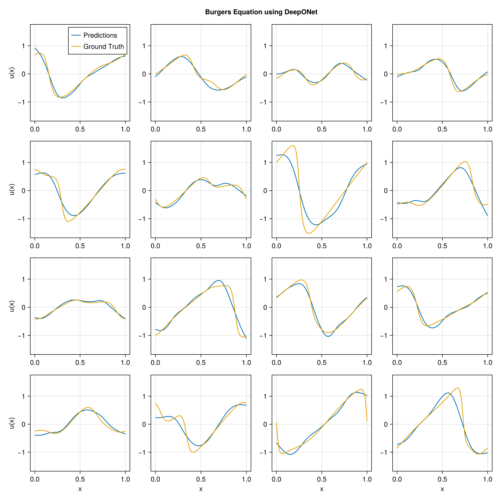

using DataDeps, MAT, MLUtils
using PythonCall, CondaPkg # For `gdown`
using Printf
const gdown = pyimport("gdown")
register(
DataDep(
"Burgers",
"""
Burgers' equation dataset from
[fourier_neural_operator](https://github.com/zongyi-li/fourier_neural_operator)
mapping between initial conditions to the solutions at the last point of time \
evolution in some function space.
u(x,0) -> u(x, time_end):
* `a`: initial conditions u(x,0)
* `u`: solutions u(x,t_end)
""",
"https://drive.google.com/uc?id=16a8od4vidbiNR3WtaBPCSZ0T3moxjhYe",
"9cbbe5070556c777b1ba3bacd49da5c36ea8ed138ba51b6ee76a24b971066ecd";
fetch_method=(url, local_dir) -> begin
pyconvert(String, gdown.download(url, joinpath(local_dir, "Burgers_R10.zip")))
end,
post_fetch_method=unpack
)
)
filepath = joinpath(datadep"Burgers", "burgers_data_R10.mat")
const N = 2048
const Δsamples = 2^3
const grid_size = div(2^13, Δsamples)
const T = Float32
file = matopen(filepath)
x_data = reshape(T.(collect(read(file, "a")[1:N, 1:Δsamples:end])), N, :, 1)
y_data = reshape(T.(collect(read(file, "u")[1:N, 1:Δsamples:end])), N, :, 1)
close(file)
x_data = permutedims(x_data, (2, 1, 3))
grid = reshape(T.(collect(range(0, 1; length=grid_size)')), :, grid_size, 1)
1×1024×1 Array{Float32, 3}:
[:, :, 1] =
0.0 0.000977517 0.00195503 … 0.997067 0.998045 0.999022 1.0
using Lux, NeuralOperators, Optimisers, Zygote, Random
using LuxCUDA
const cdev = cpu_device()
const gdev = gpu_device()
deeponet = DeepONet(;
branch=(size(x_data, 1), ntuple(Returns(32), 5)...),
trunk=(size(grid, 1), ntuple(Returns(32), 5)...),
branch_activation=tanh,
trunk_activation=tanh
)
ps, st = Lux.setup(Random.default_rng(), deeponet) |> gdev;
((branch = (layer_1 = (weight = Float32[0.014831338 -0.040142287 … -0.022390917 -0.06406486; 0.048985977 0.064103186 … 0.076186866 0.08541736; … ; -0.056755476 0.070251524 … 0.06257992 -0.083709456; 0.06376557 -0.058521967 … 0.068108976 0.03946317], bias = Float32[-0.030414496, -0.013419207, 0.0018688515, 0.027646482, 0.00065627694, 0.017085493, 0.027406499, 0.018981673, 0.026156865, -0.0020383112 … 0.0070687793, -0.007292602, -0.02000986, 0.025570557, -0.009732991, -0.0003460385, -0.005899206, 0.023164298, -0.008585647, -0.028182048]), layer_2 = (weight = Float32[-0.5029709 0.056803986 … -0.16234504 0.13610028; -0.2396382 0.05133461 … 0.18631037 0.23165984; … ; -0.38444257 0.50067836 … -0.3811014 0.38969287; 0.19192995 -0.118711434 … 0.39684644 -0.48566344], bias = Float32[-0.0051663606, -0.11428647, -0.03836183, 0.16636288, -0.05361665, 0.072116986, 0.13332433, -0.13081527, 0.058389865, 0.0688513 … 0.10337054, -0.1571217, 0.11081882, 0.0302615, 0.0011307789, -0.104709886, 0.08277555, 0.003275337, -0.12069053, -0.13989206]), layer_3 = (weight = Float32[-0.4005609 0.3362194 … 0.09808162 -0.17010882; -0.017438477 0.37421307 … 0.2605819 0.48719317; … ; -0.08049148 0.0482257 … -0.4396603 -0.49436304; 0.15078475 -0.063656606 … 0.50476915 0.15329158], bias = Float32[-0.1299043, 0.03212574, 0.1310767, -0.01319799, 0.13852255, -0.043876957, 0.13581386, -0.00671688, -0.07689212, -0.16795431 … -0.08081972, 0.06963043, -0.13911644, 0.07523375, 0.13380937, -0.10757812, -0.06428438, 0.17357343, 0.031144645, -0.15971729]), layer_4 = (weight = Float32[-0.21620753 0.32435867 … 0.3489744 -0.023495814; -0.20720547 0.122874774 … -0.08702838 0.32498074; … ; 0.3149498 0.4966774 … -0.06978816 -0.18318984; -0.30459955 -0.16101758 … -0.34683478 -0.45135972], bias = Float32[0.10988615, 0.15335816, 0.018759077, 0.085182175, 0.010863877, 0.13951305, -0.12719043, 0.10355394, 0.15843317, -0.005502482 … 0.05940299, -0.055185944, 0.027974676, -0.033660516, 0.06914041, -0.17014779, 0.11059588, 0.037116665, 0.08683688, 0.15004387]), layer_5 = (weight = Float32[-0.3549353 0.35420558 … 0.08021633 0.041079864; -0.33789465 -0.2793407 … -0.0058601135 -0.19684878; … ; 0.30766535 0.3275591 … 0.4478074 0.24104479; 0.19712344 0.059312284 … -0.5035465 0.33720478], bias = Float32[-0.16412862, 0.04429522, 0.10554117, -0.043551665, -0.05390542, -0.14591514, -0.10791966, -0.061405007, 0.0802036, -0.14277898 … 0.10371406, -0.09581454, 0.036364175, 0.06984184, 0.03328008, 0.1369213, -0.14190382, -0.016613888, -0.15356396, 0.1270525])), trunk = (layer_1 = (weight = Float32[0.8125963; -2.5401683; … ; 1.0891441; -0.60299027;;], bias = Float32[-0.17695391, -0.28428006, -0.7567818, 0.9128512, 0.8993653, 0.091415286, 0.039782643, -0.2109946, 0.7048689, -0.30848694 … -0.5245012, 0.1260767, -0.2779516, 0.60839736, 0.11160421, 0.71969616, -0.45614076, 0.14291143, 0.7224691, -0.335464]), layer_2 = (weight = Float32[-0.41672105 -0.24067175 … 0.2344009 -0.27223; 0.3367334 0.41144934 … -0.18877931 0.41918743; … ; -0.38519794 -0.2873859 … 0.12553978 -0.5066716; 0.23684447 -0.4493352 … -0.28470096 0.3336119], bias = Float32[0.163983, -0.003365236, -0.099352874, -0.13162686, 0.011731512, 0.15055522, -0.107151575, 0.11777001, -0.0300903, -0.080454774 … -0.13230483, 0.108144976, -0.12201635, 0.042205095, 0.16527241, -0.015465912, 0.024561098, -0.16938494, -0.11487271, 0.14868067]), layer_3 = (weight = Float32[-0.021530397 -0.013591899 … 0.1664911 0.091673456; 0.26809505 0.33738858 … 0.4708244 0.057395533; … ; -0.29168108 0.43044624 … 0.1602453 0.06490272; 0.089604564 -0.3395522 … -0.05577772 0.047884606], bias = Float32[-0.02233587, -0.123985216, -0.16184162, 0.11793004, -0.08425787, 0.069326654, -0.04954914, -0.10646945, -0.17500052, -0.10648856 … -0.12882918, 0.09578725, 0.14867322, 0.09543366, -0.13914129, 0.166565, 0.025798043, -0.15382867, -0.1118531, 0.11813102]), layer_4 = (weight = Float32[0.058942597 -0.23933403 … -0.2758459 0.21907237; -0.2575985 -0.015511264 … 0.09101834 0.2768581; … ; -0.4246516 -0.34155908 … -0.056736946 -0.17624895; 0.07650657 0.21523103 … 0.28344256 -0.07886394], bias = Float32[0.16817608, 0.01890067, -0.08007075, 0.08142902, 0.11506515, -0.047410443, 0.16243984, 0.0701984, -0.065528065, 0.035459533 … 0.08700519, -0.13007861, 0.08354802, -0.073940665, -0.11085685, -0.11234706, 0.022638042, 0.0156214135, -0.0454629, -0.14154665]), layer_5 = (weight = Float32[-0.03793263 0.3848182 … 0.3482092 0.37497452; 0.1905026 -0.3503494 … -0.008057124 -0.3948859; … ; -0.38834292 0.46371937 … -0.46821505 -0.4163959; 0.46759212 -0.413481 … -0.47913986 0.37992352], bias = Float32[-0.064570196, -0.12996651, 0.10520176, -0.03985718, 0.02040504, -0.12480135, 0.059601124, 0.006873329, 0.010194184, 0.107402034 … 0.13279866, -0.0942025, -0.15776369, 0.0025759942, 0.018873738, -0.08260616, 0.018254707, -0.056824002, -0.17128155, 0.07026213])), additional = NamedTuple()), (branch = (layer_1 = NamedTuple(), layer_2 = NamedTuple(), layer_3 = NamedTuple(), layer_4 = NamedTuple(), layer_5 = NamedTuple()), trunk = (layer_1 = NamedTuple(), layer_2 = NamedTuple(), layer_3 = NamedTuple(), layer_4 = NamedTuple(), layer_5 = NamedTuple()), additional = NamedTuple()))
x_data_dev = x_data |> gdev
y_data_dev = y_data |> gdev
grid_dev = grid |> gdev
function loss_function(model, ps, st, ((v, y), u))
û, stₙ = model((v, y), ps, st)
return MAELoss()(û, u), stₙ, (;)
end
function train_model!(model, ps, st, data; epochs=5000)
train_state = Training.TrainState(model, ps, st, Adam(0.0001f0))
for epoch in 1:epochs
_, loss, _, train_state = Training.single_train_step!(
AutoZygote(), loss_function, data, train_state)
if epoch % 25 == 1 || epoch == epochs
@printf("Epoch %d: loss = %.6e\n", epoch, loss)
end
end
return train_state.parameters, train_state.states
end
ps_trained, st_trained = train_model!(
deeponet, ps, st, ((x_data_dev, grid_dev), y_data_dev))
((branch = (layer_1 = (weight = Float32[0.018288065 -0.036609255 … -0.019215105 -0.06072737; 0.054982733 0.06965827 … 0.08298888 0.091829896; … ; -0.04699859 0.08070231 … 0.07101722 -0.074624345; 0.048542865 -0.07427957 … 0.053978413 0.024783675], bias = Float32[0.07583492, 0.06408036, -0.073657796, -0.052701674, 0.0030212535, -0.11584642, -0.11230498, -0.107757136, 0.03549187, -0.07062323 … 0.043065395, 0.036376093, -0.04723114, -0.011389323, 0.007835039, -0.06695095, -0.16400295, 0.06853393, -0.17419523, -0.09612668]), layer_2 = (weight = Float32[-0.5047179 0.028993154 … -0.14075097 0.17005321; -0.2312758 0.056755178 … 0.20454402 0.221675; … ; -0.38161764 0.4822451 … -0.37967986 0.3861342; 0.21948977 -0.110878445 … 0.39405754 -0.48960152], bias = Float32[-0.10483524, -0.14923854, -0.14377743, 0.30010846, -0.18735626, 0.014994801, 0.18708363, -0.1901719, 0.13618922, 0.09580069 … 0.18166396, -0.13248295, 0.18890278, 0.026051113, -0.06648022, -0.11151489, 0.03913867, 0.012234964, -0.13688153, -0.024255637]), layer_3 = (weight = Float32[-0.3376524 0.3392389 … 0.0902713 -0.18192399; -0.024532396 0.31012025 … 0.25533414 0.49410346; … ; -0.09271316 0.09152516 … -0.4339018 -0.45202124; 0.15244073 -0.061068974 … 0.49883193 0.15076393], bias = Float32[-0.14771059, 0.14385812, 0.12140669, 0.047774587, 0.17650987, 0.06588653, 0.15187599, -0.054412547, -0.089593135, -0.101666965 … -0.07649036, -0.020435648, -0.18845348, 0.16117075, 0.2012297, -0.14546528, -0.19026332, 0.29297644, -0.01837553, -0.12071968]), layer_4 = (weight = Float32[-0.23548473 0.3388008 … 0.32772067 -0.022304565; -0.21685734 0.09464935 … -0.08774012 0.3264054; … ; 0.31746283 0.48336643 … -0.070610106 -0.19689673; -0.3143012 -0.17387508 … -0.32936457 -0.42260718], bias = Float32[0.11793337, 0.09883273, 0.109530754, 0.1298683, -0.08622089, 0.13573803, -0.22623347, -0.024585268, 0.1438871, -0.022386575 … -0.06386923, -0.19019486, 0.07600434, 0.10214485, 0.08182278, 0.028326072, 0.06625183, 0.005518161, 0.067583255, 0.13879935]), layer_5 = (weight = Float32[-0.3377782 0.34393072 … 0.09789016 0.035273153; -0.35001135 -0.23316625 … 0.007158202 -0.16910776; … ; 0.30177772 0.33218363 … 0.45350388 0.24894093; 0.19890608 0.052957874 … -0.50704527 0.3308442], bias = Float32[-0.1321332, 0.0072691175, 0.08575026, -0.11190694, -0.15151604, -0.11036787, -0.08432673, -0.049085956, 0.10075461, -0.1906891 … 0.13877206, -0.055489752, 0.0424121, 0.09321407, -0.011715895, 0.22339094, -0.0520724, -0.033308845, -0.18074255, 0.119134225])), trunk = (layer_1 = (weight = Float32[0.8131926; -2.5398085; … ; 1.081752; -0.6024484;;], bias = Float32[-0.18053547, -0.270545, -0.7053461, 0.8670141, 0.9444558, 0.10324153, 0.076498084, -0.24018347, 0.7113813, -0.3181662 … -0.54405534, 0.109002754, -0.2629184, 0.592259, 0.116456226, 0.73977983, -0.44750276, 0.12975104, 0.7245962, -0.3391475]), layer_2 = (weight = Float32[-0.4136853 -0.2308214 … 0.23128188 -0.2700171; 0.3225531 0.4072381 … -0.18389364 0.41517872; … ; -0.36631083 -0.2835349 … 0.119017564 -0.5021958; 0.2416627 -0.45759487 … -0.27917355 0.32849655], bias = Float32[0.16213742, 0.0020380514, -0.089884624, -0.14198731, 0.007011231, 0.13595414, -0.1203806, 0.11655086, -0.03898428, -0.088177204 … -0.114818625, 0.10253391, -0.11774148, 0.06591205, 0.1758555, -0.030979788, 0.016154222, -0.19270334, -0.12338355, 0.15342987]), layer_3 = (weight = Float32[0.04270215 -0.04562682 … 0.061236322 0.15288444; 0.2685923 0.33651084 … 0.46959943 0.058257192; … ; -0.2947422 0.43395057 … 0.13965477 0.063051105; 0.09650361 -0.34790862 … -0.044905737 0.05533598], bias = Float32[0.060139764, -0.12278505, -0.15211022, 0.092839494, -0.102168, 0.07034095, -0.041896556, -0.10789597, -0.1617004, -0.10714575 … -0.11575127, 0.08925372, 0.14076078, 0.083903655, -0.14635924, 0.16338556, 0.038677443, -0.16033168, -0.11141888, 0.124617346]), layer_4 = (weight = Float32[0.033752646 -0.21136382 … -0.2602177 0.24155796; -0.2625332 -0.008071658 … 0.104441196 0.2800152; … ; -0.40783593 -0.34425586 … -0.069948904 -0.16886513; 0.08351423 0.22059232 … 0.26927915 -0.067675754], bias = Float32[0.14637336, 0.013053428, -0.083051875, 0.069139205, 0.12026038, -0.025187202, 0.14281675, 0.071825296, -0.06823063, 0.078431375 … 0.09808634, -0.13165015, 0.072826974, -0.06076218, -0.10358071, -0.09188112, 0.025956322, 0.006920388, -0.02820015, -0.1314301]), layer_5 = (weight = Float32[-0.026434336 0.380616 … 0.34930107 0.37204129; 0.2030826 -0.34264833 … -0.018035604 -0.40660554; … ; -0.3687243 0.46802318 … -0.46153608 -0.42906198; 0.4928113 -0.39902666 … -0.43009755 0.42908457], bias = Float32[-0.06358674, -0.120576374, 0.08708339, -0.024151405, 0.020064136, -0.09904064, 0.056592766, -0.052646264, 0.023839027, 0.08880294 … 0.1337534, -0.09063723, -0.16280447, -0.0013968654, 0.049268097, -0.083434746, 0.014035945, -0.084682405, -0.18433842, 0.04181964])), additional = NamedTuple()), (branch = (layer_1 = NamedTuple(), layer_2 = NamedTuple(), layer_3 = NamedTuple(), layer_4 = NamedTuple(), layer_5 = NamedTuple()), trunk = (layer_1 = NamedTuple(), layer_2 = NamedTuple(), layer_3 = NamedTuple(), layer_4 = NamedTuple(), layer_5 = NamedTuple())))
using CairoMakie
pred = first(deeponet((x_data_dev, grid_dev), ps_trained, st_trained)) |> cdev
begin
fig = Figure(; size=(1024, 1024))
axs = [Axis(fig[i, j]) for i in 1:4, j in 1:4]
for i in 1:4, j in 1:4
idx = i + (j - 1) * 4
ax = axs[i, j]
l1 = lines!(ax, vec(grid), pred[idx, :, 1])
l2 = lines!(ax, vec(grid), y_data[idx, :, 1])
i == 4 && (ax.xlabel = "x")
j == 1 && (ax.ylabel = "u(x)")
if i == 1 && j == 1
axislegend(ax, [l1, l2], ["Predictions", "Ground Truth"])
end
end
linkaxes!(axs...)
fig[0, :] = Label(fig, "Burgers Equation using DeepONet"; tellwidth=false, font=:bold)
fig
end
